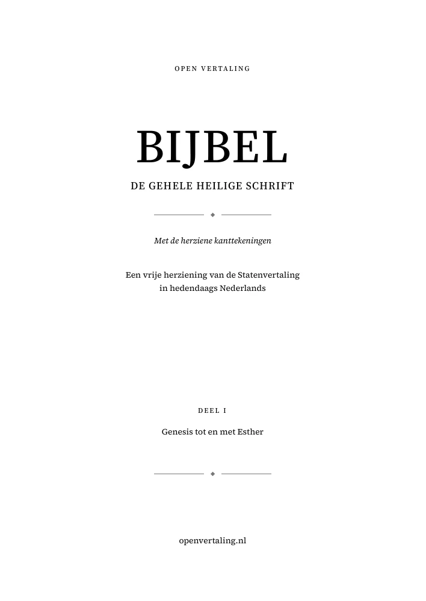
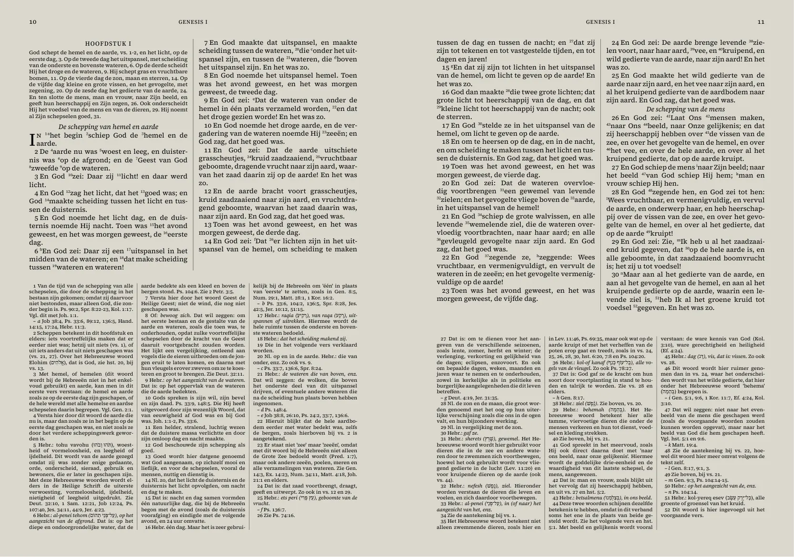

De Bijbel met kanttekeningen
Open Vertaling, in drie delen
Uitgever: Open Vertaling
De hele Bijbel als PDF met de herziene kanttekeningen. De tekst staat in twee kolommen en de noten eronder in drie, op dezelfde bladzijde als het woord waarbij ze horen.
Inhoud
Zo ziet het eruit

Over deze uitgave
Een cijfer in de tekst verwijst naar een uitleggende kanttekening, een letter naar andere bijbelplaatsen. Beide staan vlak vóór het woord waarop ze slaan. Elk deel heeft een klikbare inhoudsopgave en bladwijzers per boek en hoofdstuk.
De Godsnaam staat als YHWH, zoals de site die standaard toont. Bij een verwijzing staat alleen de bijbelplaats, niet de hele tekst ervan. Bij de apocriefe boeken staan geen kanttekeningen.
De PDF's worden bij elke publicatie opnieuw opgebouwd, dus ze lopen gelijk met de tekst op de site.